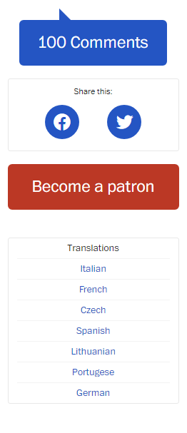

A LIST APART
Design
by Ethan MarcotteMay 25,2010
Published in CSS, Interaction Design, Layout & Grids,
Mobile/Multidevice, Responsive Design "The control which designers know in the print medium, and often desire in the web medium, is simply a function of the limitation of the printed page. We should embrace the fact that the web doesn’t have the same constraints, and design for this flexibility. But first, we must 'accept the ebb and flow of things.'
John Allsopp, “A Dao of Web Design"
John Allsopp, “A Dao of Web Design"
The English architect Christopher Wren once quipped that his chosen field “aims for Eternity,” and there’s something appealing about that formula: Unlike the web, which often feels like aiming for next week, architecture is a discipline very much defined by its permanence.

A building’s foundation defines its footprint, which defines its frame, which shapes the facade. Each phase of the architectural process is more immutable, more unchanging than the last. Creative decisions quite literally shape a physical space, defining the way in which people move through its confines for decades or even centuries.
Working on the web, however, is a wholly different matter. Our work is defined by its transience, often refined or replaced within a year or two. Inconsistent window widths, screen resolutions, user preferences, and our users’ installed fonts are but a few of the intangibles we negotiate when we publish our work, and over the years, we’ve become incredibly adept at doing so.
But the landscape is shifting, perhaps more quickly than we might like. Mobile browsing is expected to outpace desktop-based access within three to five years. Two of the three dominant video game consoles have web browsers (and one of them is quite excellent). We’re designing for mice and keyboards, for T9 keypads, for handheld game controllers, for touch interfaces. In short, we’re faced with a greater number of devices, input modes, and browsers than ever before.
In recent years, I’ve been meeting with more companies that request “an iPhone website” as part of their project. It’s an interesting phrase: At face value, of course, it speaks to mobile WebKit’s quality as a browser, as well as a powerful business case for thinking beyond the desktop. But as designers, I think we often take comfort in such explicit requirements, as they allow us to compartmentalize the problems before us. We can quarantine the mobile experience on separate subdomains, spaces distinct and separate from “the non-iPhone website.” But what’s next? An iPad website? An N90 website? Can we really continue to commit to supporting each new user agent with its own bespoke experience? At some point, this starts to feel like a zero sum game. But how can we—and our designs—adapt?
A flexible foundation
Let’s consider an example design. I’ve built a simple page for a hypothetical magazine; it’s a straightforward two-column layout built on a fluid grid, with not a few flexible images peppered throughout. As a long-time proponent of non-fixed layouts, I’ve long felt they were more “future proof” simply because they were layout agnostic. And to a certain extent, that’s true: flexible designs make no assumptions about a browser window’s width, and adapt beautifully to devices that have portrait and landscape modes.

Working on the web, however, is a wholly different matter. Our work is defined by its transience, often refined or replaced within a year or two. Inconsistent window widths, screen resolutions, user preferences, and our users’ installed fonts are but a few of the intangibles we negotiate when we publish our work, and over the years, we’ve become incredibly adept at doing so.
But the landscape is shifting, perhaps more quickly than we might like. Mobile browsing is expected to outpace desktop-based access within three to five years. Two of the three dominant video game consoles have web browsers (and one of them is quite excellent). We’re designing for mice and keyboards, for T9 keypads, for handheld game controllers, for touch interfaces. In short, we’re faced with a greater number of devices, input modes, and browsers than ever before.
In recent years, I’ve been meeting with more companies that request “an iPhone website” as part of their project. It’s an interesting phrase: At face value, of course, it speaks to mobile WebKit’s quality as a browser, as well as a powerful business case for thinking beyond the desktop. But as designers, I think we often take comfort in such explicit requirements, as they allow us to compartmentalize the problems before us. We can quarantine the mobile experience on separate subdomains, spaces distinct and separate from “the non-iPhone website.” But what’s next? An iPad website? An N90 website? Can we really continue to commit to supporting each new user agent with its own bespoke experience? At some point, this starts to feel like a zero sum game. But how can we—and our designs—adapt?
A flexible foundation
Let’s consider an example design. I’ve built a simple page for a hypothetical magazine; it’s a straightforward two-column layout built on a fluid grid, with not a few flexible images peppered throughout. As a long-time proponent of non-fixed layouts, I’ve long felt they were more “future proof” simply because they were layout agnostic. And to a certain extent, that’s true: flexible designs make no assumptions about a browser window’s width, and adapt beautifully to devices that have portrait and landscape modes.
Huge images are huge. Our layout, flexible though it is, doesn’t respond well to changes in resolution or viewport size.

But no design, fixed or fluid, scales seamlessly beyond the context for which it was originally intended. The example design scales perfectly well as the browser window resizes, but stress points quickly appear at lower resolutions. When viewed at viewport smaller than 800×600, the illustration behind the logo quickly becomes cropped, navigation text can wrap in an unseemly manner, and the images along the bottom become too compact to appear legible. And it’s not just the lower end of the resolution spectrum that’s affected: when viewing the design on a widescreen display, the images quickly grow to unwieldy sizes, crowding out the surrounding context.
In short, our flexible design works well enough in the desktop-centric context for which it was designed, but isn’t optimized to extend far beyond that.